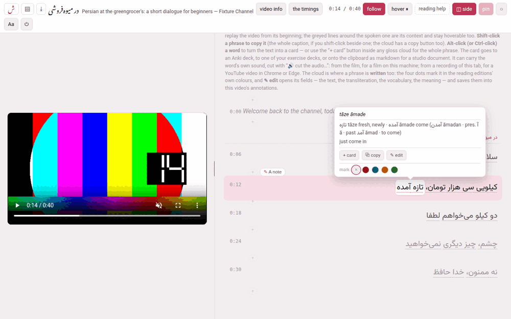

The video player

1. Reading a transcript#
The video sits at the top of the page (or at its left, side by side) and the whole transcript runs underneath, one line per caption, each with its time in front of it. The line is cut into phrases — the small units a gloss translates as one thing — and each phrase is underlined with a dotted line.
Point at a phrase and its cloud opens: the reading in kana (Japanese), the transliteration, the vocabulary line, the meaning, and a note where the automatic transcript heard something wrong. Words of the video’s language inside a vocabulary line or a meaning are set in the language’s own face and direction, so a Persian word inside an English sentence reads the right way round.
Click a line — or its time — and the video plays from that line’s beginning. That is the main way to work: hear it, read the cloud, click, hear it again. A click that ends a text selection does not replay, so you can still select words to copy them.
While the video plays, the line being spoken is lit: full ink on a tinted band. The lines just before and after it are grey, and the rest fainter still. Nothing is hidden, and every line stays hoverable, because a sentence often runs over two or three captions — the neighbours are the context you need, and the fade tells you where you are. Before the video has started, every line is in full ink.
A few lines look different on purpose:
- A chapter heading
- stands above the caption it opens: the title of a chapter marker the uploader put in the transcript (
Capitolo 3: Al mercatogives Al mercato). - A caption entirely in another language
- — the English opening many lessons start with — is grey and italic and has no phrases: it is never glossed.
- A run nobody glossed
- inside a caption — a stretch of English in a Persian line, or a phrase of the language itself that was left without a gloss — is plain text with no cloud. In a video still being written (a draft), or once a dictionary, a corpus or a translation model is set up for the language (Reading help), a blank phrase stays a phrase, so that it can be written or looked up.
2. Copying, and making cards#
- Shift-click a phrase
- to copy its text; Shift-click beside the phrases, on the line, to copy the whole caption. While Shift is held, the phrase under the pointer is outlined. The cloud’s ⧉ copy button copies the phrase too, which is the way on a touch screen.
- Alt-click (or Ctrl-click, or ⌘-click) a word
- to make a card of that very word, with the phrase’s meaning, the caption as its context and the vocabulary as its notes. While one of those keys is held, the word under the pointer lights up. + card in a cloud does the same for the whole phrase. The card can go to an Anki deck, to one of your exercise decks, or onto the clipboard as studio markdown, and it can carry the word’s own sound and a frame of the video — the section Cards and Anki explains the sheet.
The cloud also has ✎ edit and a row of four colours, which write into the video: see Editing a phrase.
3. The bar#
Every control, left to right:
| Control | What it does |
|---|---|
| ش | back to the hub |
| ▤ | the channel’s page: all its videos |
| ⤓ | download the video as one zip another Parseh can install — its tooltip gives the size when the zip carries a film (Taking videos away) |
| the title | the title in the video’s language, then in Latin letters, and the channel |
| draft | shown only while the video is still being written (drafts) |
| video info | the title, the channel, the level and the blurb, edited (Video info) |
| the timings | moves where each caption starts (The timings) |
0:14 / 0:40 | where the video is, and how long it is |
| follow | keeps the spoken line in view (on until you turn it off) |
| hover ⏸ | pauses the video while a cloud is open (off until you turn it on) |
| dictionary | reading help under a phrase nobody glossed; shown once there is something to help with (Reading help) |
| definitions, in english | the dictionary’s own definitions, and the same translated; only where the dictionary defines its words in their own language |
| kana / pinyin | Japanese and Chinese: the transcript as its reading alone |
| reading help | the page that sets up dictionaries, corpora and translation models, /lookup/ |
| ◫ side | the video beside the transcript instead of above it |
| pin | keeps the video in view while you scroll (on until you turn it off) |
| ○ / ● / ◐ | the theme — light, dark, sepia — one setting for the whole toolbox |
| Aa | text and margins |
| ⏻ | stops the Parseh server |
| Decompose Kanji / Decompose Hanzi | Japanese and Chinese: a character’s components (Reading help) |
A button that is lit (filled with the accent colour) is on. Every one of these switches is remembered in this browser and holds for every video.
follow#
With follow on, the page scrolls as the video plays so that the spoken line stays on screen. It waits for you: for two and a half seconds after you turn the mouse wheel or drag the page with a finger, it leaves the page where you put it, so you can read ahead or look back without a fight. Turning follow on brings the spoken line back into view at once.
hover ⏸#
With hover ⏸ on, pointing at a phrase pauses a playing video, and moving off it lets the video go on — after a third of a second, so that moving from one phrase to its neighbour does not make it stutter. It turns the page into something you read at your own pace without touching the keyboard. The video does not start again underneath a card sheet, and if you press play yourself in the meantime, it leaves that alone.
pin, and the grip#
With pin on (the default), the video stays stuck under the bar while the transcript scrolls beneath it. Off, it scrolls away with the page, which leaves the whole window to the text.
The little pill under the video is a grip. Drag it down for a bigger video, up for a smaller one — the height follows the width, at 16:9 — and double-click it to go back to the default size. The size is remembered.
Side by side#
◫ side puts the video in a column on the left and the transcript on the right. On a wide screen it is usually the better way to work: the video keeps a decent size instead of being squeezed into the top of the window, and far more of the transcript is in view at once.
- The grip becomes the divider between the two columns and drags sideways; the video fills whatever width you give its column, from a narrow one up to about three quarters of the window.
- pin is greyed out: beside the text the video is always in view, so there is nothing left for pinning to decide.
- The two layouts remember their own sizes, because the grip resizes a different thing in each; a double-click forgets the size of the layout you are in.
- Below 860 pixels of window width there is no room for two columns, and the page stays stacked whatever the setting says. Widen the window again and it goes back to side by side.
Aa: text and margins#
Aa opens a small panel, text & margins, of sliders that apply at once and are remembered in this browser:
| Slider | Range | Starts at |
|---|---|---|
| the language’s name (Persian, Japanese…) — the transcript’s text | 14–36 px | 20 px |
| glosses — the text of the cloud | 10–20 px | 12.5 px |
| width — the transcript’s column | 480–1400 px | 760 px |
| leading — the space between lines | 0.7–1.6 × | 1 × |
| character spacing (Japanese and Chinese) | 0–1 em | 0 |
| reading contrast (Japanese) — how dark the kana over the kanji are, from the quiet grey (0) to full ink (100) | 0–100 % | 0 |
| reading / kanji size (Japanese) — the kana’s size against the kanji’s | 10–200 % | 50 % |
reset puts every slider back; ✕ or Esc closes the panel.
⏻#
⏻ stops the Parseh server, after asking. If something is still at work — a download being packed, a video being added — it names it first and asks whether to stop anyway, because stopping cuts it off. Every page of Parseh has the same button.
4. A link to a moment#
An address ending in #t= and a number of seconds — /youtube/v/<id>/#t=95 — opens the player with the video at that second. The cards you make from a video carry such a link back to the moment they were made at.
5. When the video cannot play#
- A YouTube video with no internet
- : the video’s place says the video needs an internet connection — the transcript below still works. It does: the glosses, the clouds and everything you write are on this machine.
- A film on this machine
- needs no internet at all. If its file has gone missing the page says the film that belongs to this video is not here any more; if the browser cannot play or decode it, it says that instead (A film on this machine).
Only what needs the video itself waits for it. The timings play the video, so until it has loaded — no internet, a film gone or one the browser cannot play — they answer the player has not loaded yet; and a card’s sound clip, which is cut from the video, cannot be made from a YouTube video that has not loaded or from a film that is gone.
6. On a phone#
A phone has nothing to hover with, so a tap on a phrase opens its cloud and a second tap closes it — on any screen, including one that claims a hover it never delivers. A tap elsewhere on the line still plays it from its beginning. On a narrow screen the bar slides out of the way as the page moves down and comes back on the smallest move up, bringing the video with it; a desktop is left exactly as it is.
7. While something is working#
When the player is packing a download, the small Working pill of every Parseh page says so, and the hub lists it too, until it is done. The download itself is the browser’s: the file appears in your downloads when the zip is ready.